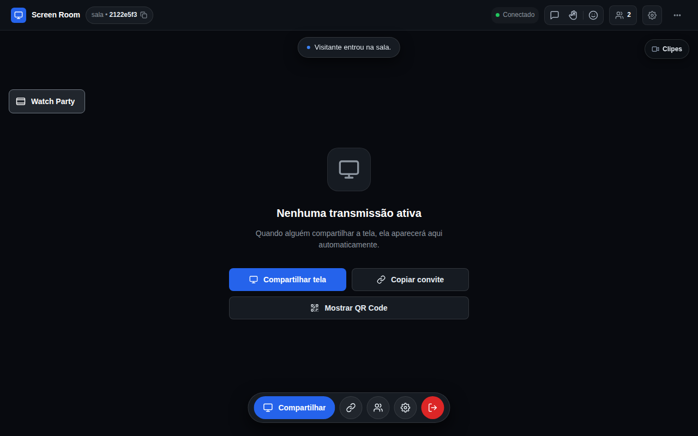
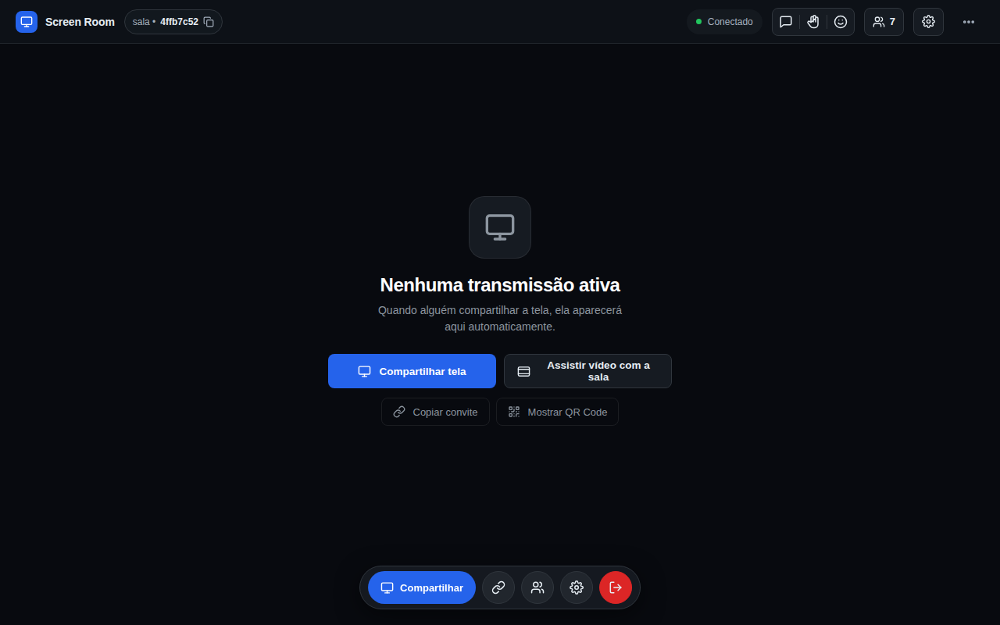
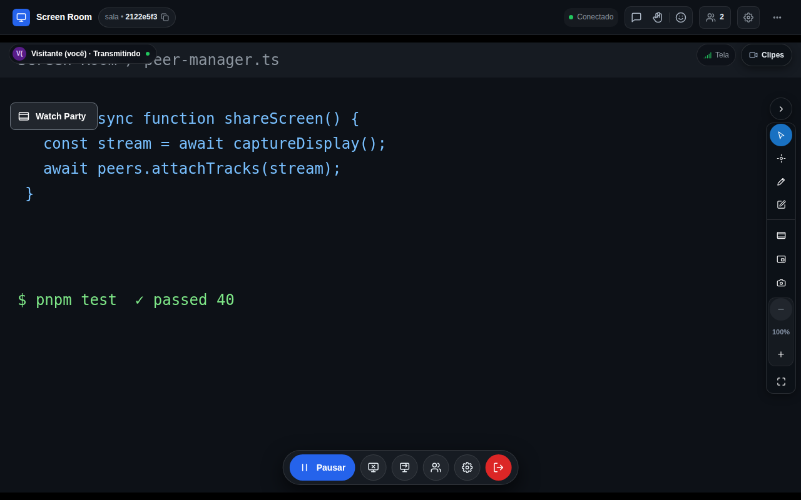
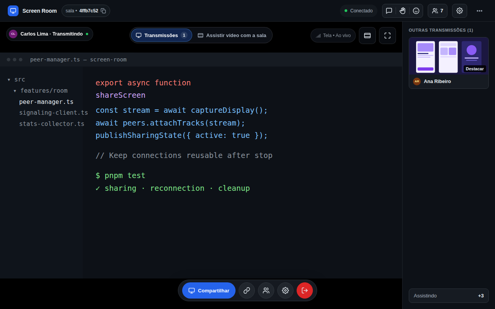
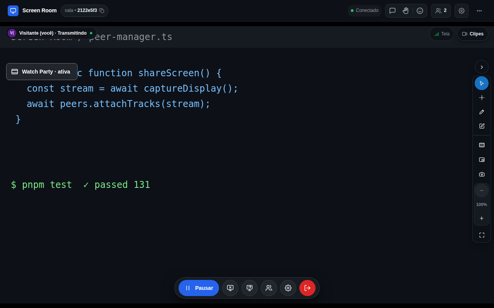
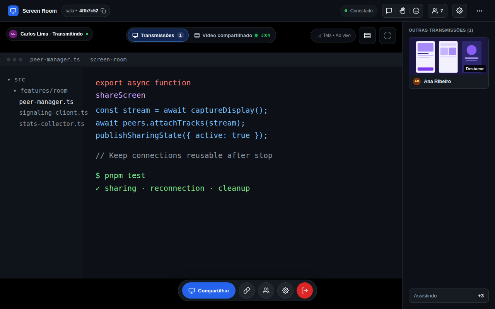
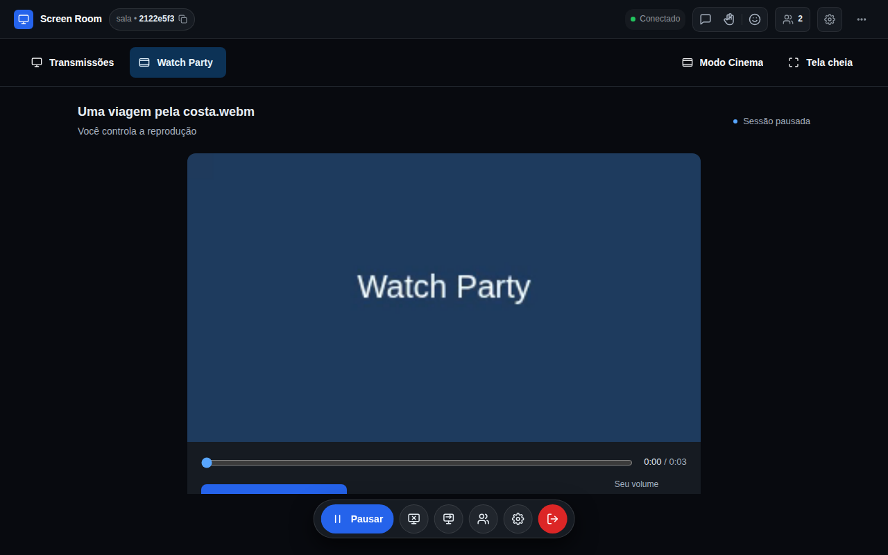
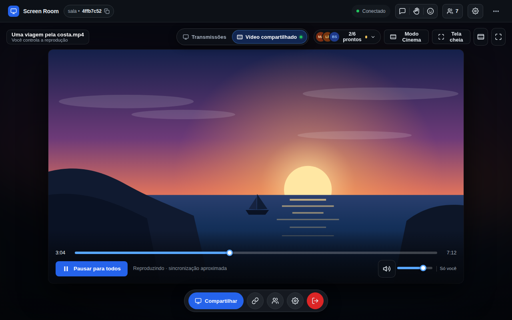

O proprietário reprovou as duas tentativas anteriores de navegação (botão flutuante isolado e abas ocupando linha inteira) e direcionou a utilização do Conceito A (Sala de cinema) como base para o player, integrando o acesso diretamente aos mecanismos de navegação e seleção de conteúdo do palco.
Como o usuário descobre e inicia a reprodução de vídeo quando ainda não há transmissões nem sessões.


Alternância e descoberta de reprodução de vídeo enquanto alguém já está transmitindo tela no palco.


Como o usuário acompanha a tela transmitida enquanto um vídeo roda em segundo plano na sala.


Equilíbrio entre foco na reprodução de mídia e visibilidade do estado dos participantes.


| Aspecto de UX | Solução Anterior (Reprovada) | Solução Proposta (Aprovada) |
|---|---|---|
| Acesso na sala vazia | Botão flutuante "Watch Party" isolado no palco ou link secundário de texto fraco. | Botão secundário "Assistir vídeo com a sala" integrado no card de início, ao lado de "Compartilhar tela". |
| Acesso com transmissão | Botão flutuante cobrindo a transmissão ou barra de abas ocupando linha inteira. | Seletor de Conteúdo do Palco compacto (38px, bordas arredondadas) integrando Transmissões e Vídeo. |
| Retorno às transmissões | Mini-player flutuante intrusivo cobrindo o canto inferior esquerdo da tela. | Sem mini-player: palco 100% limpo, com indicador discreto (ponto verde e tempo) no seletor de conteúdo. |
| Terminologia | "Watch Party" em todos os rótulos e botões cotidianos. | "Assistir vídeo com a sala" (ação inicial) e "Vídeo compartilhado" (conteúdo ativo). "Watch Party" reservado como nome técnico. |
| Gestão de participantes | Dashboard permanente consumindo espaço da tela do vídeo. | Pílula contextual de prontidão (5/6 prontos) que abre gaveta lateral ou bottom sheet sob demanda. |
| Vídeos verticais (9:16) | Controles achatados sob um vídeo estreito ou letterboxing pesado. | Console lateral dedicado no desktop (controles, áudio e participantes ao lado do vídeo alto) e layout empilhado no mobile. |
Esta etapa consiste exclusivamente em prototipação visual e pranchas de alta fidelidade para apreciação e aprovação do proprietário. Nenhuma alteração no código definitivo de produção foi realizada nesta etapa, preservando intacto o repositório, branch e PR #38.